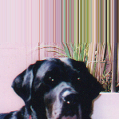
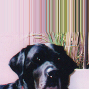

| 8.2. Convolution Matrix | ||
|---|---|---|

|
8. Generic Filters |  |
| 8.2. Convolution Matrix | ||
|---|---|---|
|
|
8. Generic Filters | |
Here is a mathematician's domain. Most of filters are using convolution matrix. With the Convolution Matrix filter, if the fancy takes you, you can build a custom filter.
What is a convolution matrix? It's possible to get a rough idea of it without using mathematical tools that only a few ones know. Convolution is the treatment of a matrix by another one which is called “kernel”.
The Convolution Matrix filter uses a first matrix which is the Image to be treated. The image is a bi-dimensional collection of pixels in rectangular coordinates. The used kernel depends on the effect you want.
GIMP uses 5x5 or 3x3 matrices. We will consider only 3x3 matrices, they are the most used and they are enough for all effects you want. If all border values of a kernel are set to zero, then system will consider it as a 3x3 matrix.
The filter studies successively every pixel of the image. For each of them, which we will call the “initial pixel”, it multiplies the value of this pixel and values of the 8 surrounding pixels by the kernel corresponding value. Then it adds the results, and the initial pixel is set to this final result value.
A simple example:

On the left is the image matrix: each pixel is marked with its value. The initial pixel has a red border. The kernel action area has a green border. In the middle is the kernel and, on the right is the convolution result.
Here is what happened: the filter read successively, from left to right and from top to bottom, all the pixels of the kernel action area. It multiplied the value of each of them by the kernel corresponding value and added results. The initial pixel has become 42: (40*0)+(42*1)+(46*0) + (46*0)+(50*0)+(55*0) + (52*0)+(56*0)+(58*0) = 42. (the filter doesn't work on the image but on a copy). As a graphical result, the initial pixel moved a pixel downwards.
This is the 5x5 kernel matrix: you enter wanted values directly into boxes.
The result of previous calculation will be divided by this divisor. You will hardly use 1, which lets result unchanged, and 9 or 25 according to matrix size, which gives the average of pixel values.
This value is added to the division result. This is useful if result may be negative. This offset may be negative.
When the initial pixel is on a border, a part of kernel is out of image. You have to decide what filter must do:
 

From left: source image, Extend border, Wrap border, Crop border
This part of kernel is not taken into account.
This part of kernel will study pixels of the opposite border, so pixels disappearing from one side reappear on the other side.
Pixels on borders are not modified, but they are cropped.
You can select there one or several channels the filter will work with.
If this option is checked, The Divisor takes the result value of convolution. If this result is equal to zero (it's not possible to divide by zero), then a 128 offset is applied. If it is negative (a negative color is not possible), a 255 offset is applied (inverts result).
If this option is not checked, the filter doesn't take in account transparency and this may be cause of some artefacts when blurring.